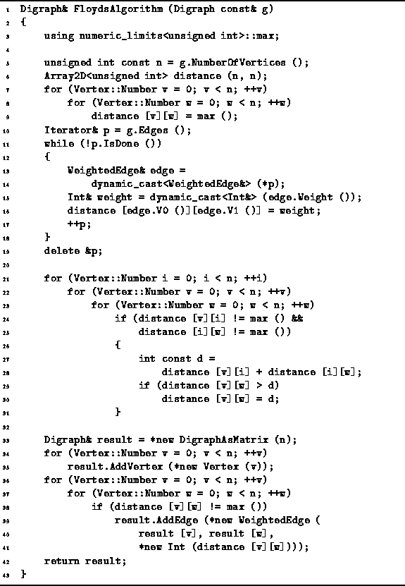
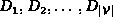

Data Structures and Algorithms
with Object-Oriented Design Patterns in C++
Data Structures and Algorithms
with Object-Oriented Design Patterns in C++
An implementation of Floyd's algorithm is shown in Program  .
The FloydsAlgorithm function takes as its lone argument
a const reference to a directed graph instance.
The directed graph is assumed to be an edge-weighted graph
in which the weights are instances of the
Int class defined in Program .
.
The FloydsAlgorithm function takes as its lone argument
a const reference to a directed graph instance.
The directed graph is assumed to be an edge-weighted graph
in which the weights are instances of the
Int class defined in Program .

Program: Floyd's Algorithm
The FloydsAlgorithm routine returns its result in the form of an edge-weighted directed graph. Therefore, the return value is a reference to a Digraph instance. The function allocates the storage, constructs the graph and returns a reference to that graph.
The principal data structure use by the algorithm
is a  matrix of unsigned integers called distance.
All the elements of the matrix are initially set to
matrix of unsigned integers called distance.
All the elements of the matrix are initially set to  (lines 6-9).
Next, an edge iterator is used to visit all the edges in the input graph
in order to transfer the weights
from the graph to the distance matrix (lines 10-19).
(lines 6-9).
Next, an edge iterator is used to visit all the edges in the input graph
in order to transfer the weights
from the graph to the distance matrix (lines 10-19).
The main work of the algorithm is done in three, nested loops (lines 21-31).
The outer loop computes the sequence of distance matrices
.
The inner two loops consider all possible pairs of vertices.
Notice that as  is computed, its entries overwrite those of
is computed, its entries overwrite those of  .
.
Finally, the values in the distance matrix are transfered to the result graph. The result graph contains the same set of vertices as the input graph. For each finite entry in the distance matrix, a weighted edge is added to the result graph.
 Copyright © 1997 by Bruno R. Preiss, P.Eng. All rights reserved.
Copyright © 1997 by Bruno R. Preiss, P.Eng. All rights reserved.